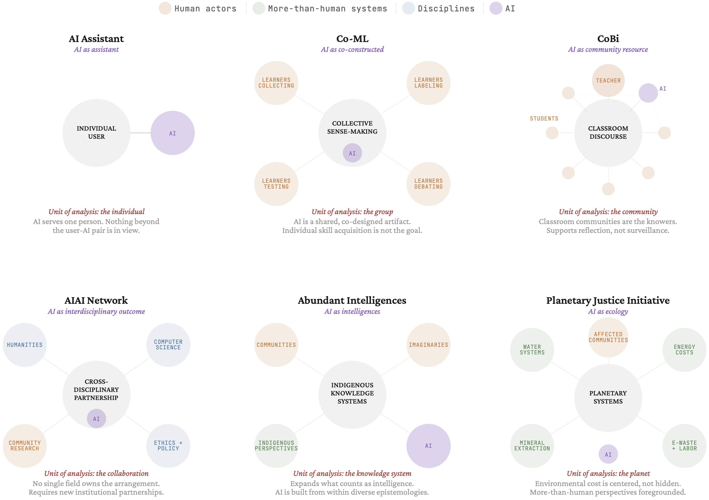

Figure 2. Five sociocultural AI projects alongside the dominant AI assistant model, visualized using a common structure. Each diagram asks what sits at the center, how is AI positioned, and who holds compositional authority. The AI assistant is arranged around the individual user and personal productivity. The five alternatives illustrate different possible arrangements of AI around a different unit of analysis, set of relationships, and commitments about whose knowledge and practices matter. Projects are organized as they grow in scale from top left to bottom right.
